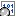

Text Compare Overview


|
Text Compare Overview |
|
|
A Text Compare session visually compares two text files, in a side-by-side or over-under layout. It helps you analyse and reconcile differences, with a variety of display, search, and editing functions available. In addition to files on your hard drive or network, you can specify files from an FTP site, from within a zip archive, or the content of a webpage. Example file specs: ftp://username@ftp.hostname.com/file.txt C:\Backups\Archive.zip\file.txt http://www.scootersoftware.com/index.html
You can also compare against text on the clipboard by selecting Open Clipboard from the File menu. The Text Compare view displays files in two editor panes that scroll together. Text is colored to highlight differences between the files. By default, the color scheme uses red to flag important differences (insertions, deletions, and changes) and blue for unimportant differences. The session's rules and file formats control how text is classified. The display background is also colored to help you spot the differences. A light red background indicates an important difference somewhere on the line, while light-blue indicates an unimportant difference. The light red background takes precedence over the light blue. This makes it easy to find differences, even if they are horizontally scrolled out of view. You can adjust these colors to suit your preferences. (See File View Comparison Colors.) On the left edge of the display is the optional thumbnail view. It represents each line of the comparison as a colored line, one pixel high. At a glance you can see the pattern of differences throughout the comparison. The white rectangle represents the main display's current view, and the small triangle represents the display's current line. Click on a line in the thumbnail to position the display at that location. Below the main panes, the current line from each file is displayed using the entire width of the window. From the View menu, choose Text Details for an editable text view, Hex Details  for a read-only hexadecimal view, or Aligned Details for a read-only view of the character alignment. See also
|
{kind=link}